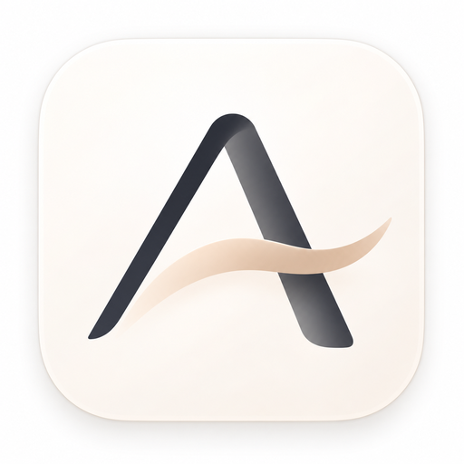

未命名 1
Aline
▾
最近打开的文件
产品需求.md
会议纪要.md
最近打开的文件夹
工作笔记
B
I
S
H1
H2
1·2·3
未命名 1
×
＋
⌄
开始写作 — 输入即所得
设置
›
通用
更改会自动保存
×
×
Aline
一个专注于写作的 Markdown 编辑器
版本 0.1.0 · UI 原型
关闭
快捷键一览
×
文件与应用
新建文件
⌘ N
打开文件
⌘ O
保存
⌘ S
新建标签
⌘ T
关闭标签
⌘ W
格式与插入
一级标题
⌘ 1
二级标题
⌘ 2
粗体
⌘ B
斜体
⌘ I
插入链接
⌘ K
视图与标签
切换侧边栏
⌘ \\
切换编辑模式
⌘ /
专注模式
⇧ ⌘ F
下一个标签
Ctrl Tab
上一个标签
Ctrl ⇧ Tab